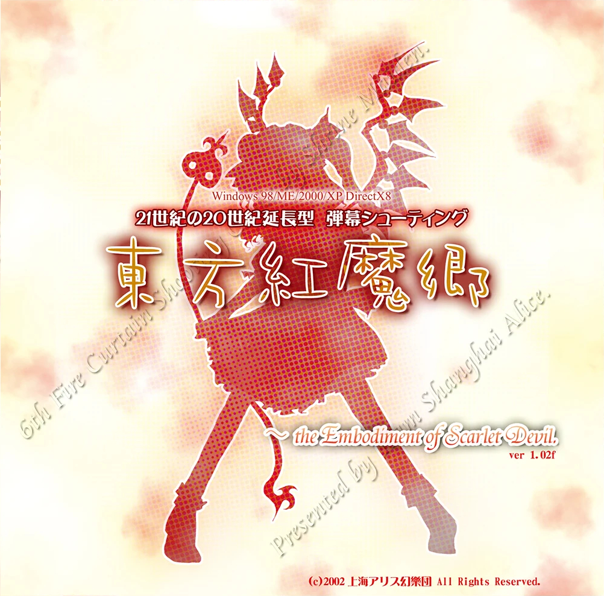
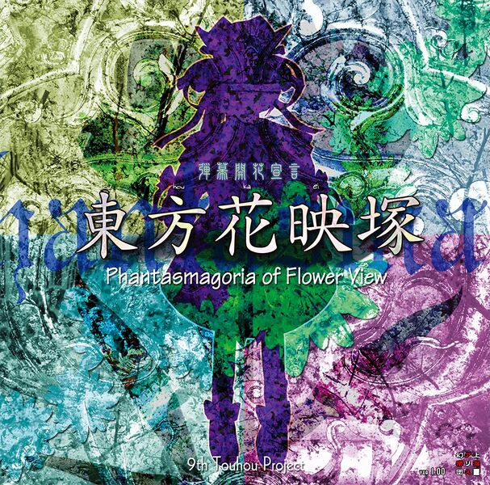
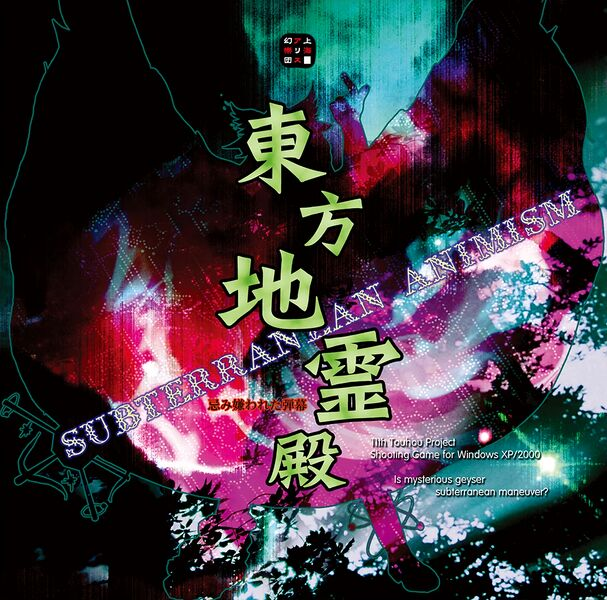
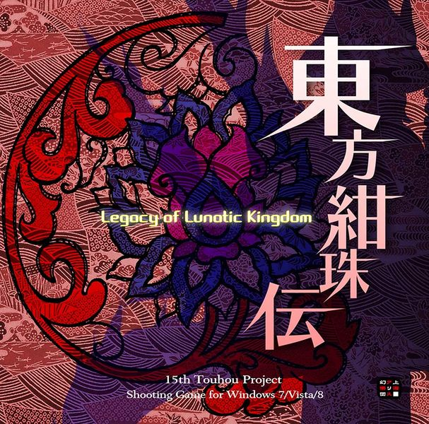
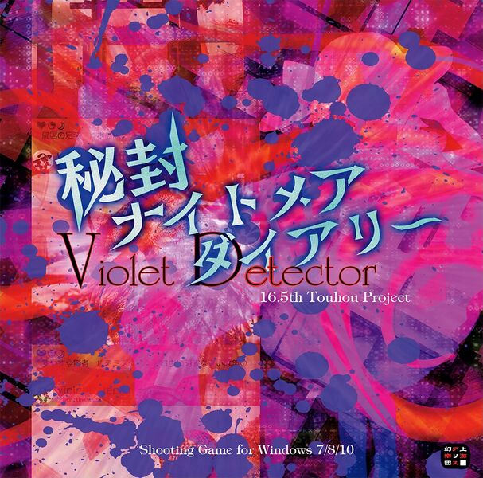
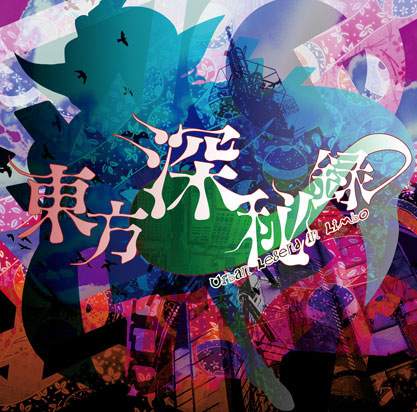
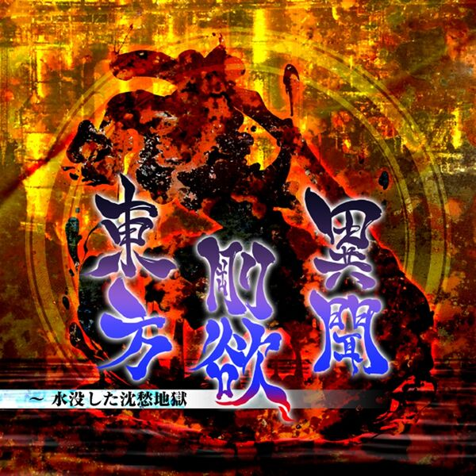

Shooter Vertical (Principal)
Embodiment of Scarlet Devil
Perfect Cherry Blossom
Imperishable Night
Phantasmagoria of Flower View
Mountain of Faith
Subterranean Animism
Undefined Fantastic Object
Ten Desires
Double Dealing Character
Legacy of Lunatic Kingdom
Hidden Star in Four Seasons
Wily Beast and Weakest Creature
Shooter Vertical (Especiales)
Shoot the Bullet
Double Spoiler
Great Fairy Wars
Impossible Spell Card
Violet Detector
100th Black Market
Acción Lucha (Versus)
Immaterial and Missing Power
Scarlet Weather Rhapsody
Touhou Hisoutensoku
Hopeless Masquerade
Urban Legend in Limbo
Antinomy of Common Flowers
Acción Lucha (Single)
Sunken Fossil World
Shooter Vertical (Principal)




Shooter Vertical (Especiales)

Juegos de lucha (Versus)

Juegos de lucha (single)

Quiz